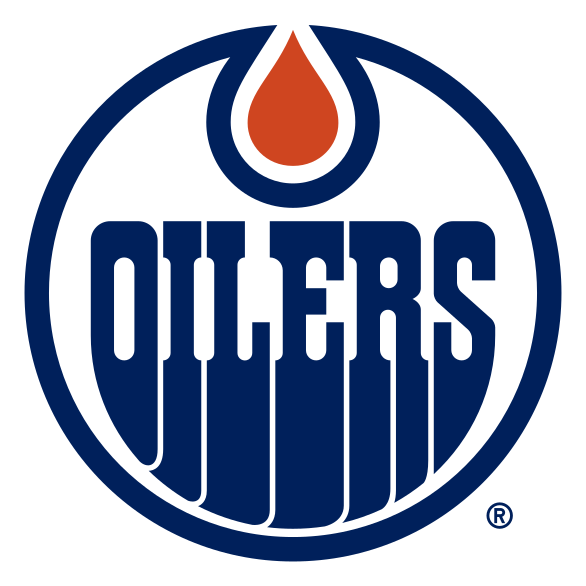
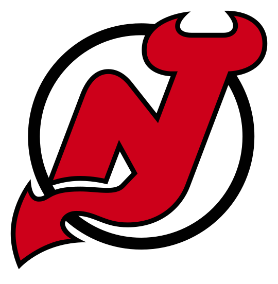
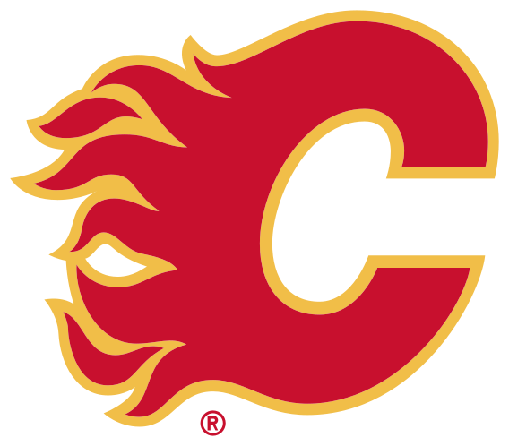
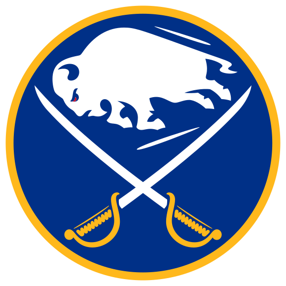

Betting Streaks
Updated 2:20 AM ET
Still Running
- 14

 OilersEDM1P BTTS No on the road
OilersEDM1P BTTS No on the road - 11

 KrakenSEA1P 3-way losses
KrakenSEA1P 3-way losses - 11
 East CarolinaECU1Q Under
East CarolinaECU1Q Under - 11
 Northern IllinoisNIU1H losses
Northern IllinoisNIU1H losses - 11Northern IllinoisNIUGame losses
- 11

 San José StateSJSUGame Under
San José StateSJSUGame Under - 11

 UtahUTAHGame wins
UtahUTAHGame wins - 10
 Maple LeafsTOR2P Over 1.5 on the road
Maple LeafsTOR2P Over 1.5 on the road - 10

 CanucksVAN3P Over 1.5 on the road
CanucksVAN3P Over 1.5 on the road - 10
 GrizzliesMEM2H covers on the road
GrizzliesMEM2H covers on the road - 10GrizzliesMEM2H wins
- 10
 BucksMIL1H losses
BucksMIL1H losses - 10
 PelicansNO2H losses
PelicansNO2H losses - 10
 KingsSAC1H no cover at home
KingsSAC1H no cover at home - 10KingsSAC1H losses at home
- 10
 EaglesPHI2H no cover
EaglesPHI2H no cover - 10
 TitansTEN1H losses
TitansTEN1H losses - 10

 LibertyLIBGame wins
LibertyLIBGame wins - 10

 UABUABGame Under
UABUABGame Under - 9OilersEDM1P BTTS No
- 9

 PanthersFLA3P Over 1.5 at home
PanthersFLA3P Over 1.5 at home - 9

 BluesSTL1P 3-way losses on the road
BluesSTL1P 3-way losses on the road - 9Maple LeafsTOR3P Over 1.5 on the road
- 9CanucksVAN1P 3-way losses at home
- 9
 HornetsCHA2H losses at home
HornetsCHA2H losses at home - 9
 ClippersLAC2H losses on the road
ClippersLAC2H losses on the road - 9ClippersLACGame losses on the road
- 9GrizzliesMEM2H covers
- 9
 Boise StateBOIS1H wins
Boise StateBOIS1H wins - 9

 Old DominionODU2H Under
Old DominionODU2H Under - 9

 UTEPUTEP1H losses
UTEPUTEP1H losses - 8

 StarsDAL1P BTTS No on the road
StarsDAL1P BTTS No on the road - 8EaglesPHI2H losses
- 8
 SteelersPIT2H wins
SteelersPIT2H wins - 8
 Alcorn StateALCNGame losses
Alcorn StateALCNGame losses - 8

 Eastern KentuckyEKU1H wins
Eastern KentuckyEKU1H wins - 8

 FloridaFLA1H wins
FloridaFLA1H wins - 8

 Long Island UniversityLIU2H losses
Long Island UniversityLIU2H losses - 8

 Oregon StateORSTGame wins
Oregon StateORSTGame wins - 8
 Texas StateTXST1H wins
Texas StateTXST1H wins - 8Texas StateTXST2H wins
- 8Texas StateTXSTGame wins
- 8

 VirginiaUVAGame wins
VirginiaUVAGame wins - 7
 BrownsCLE1Q no cover
BrownsCLE1Q no cover - 7BrownsCLE1Q losses
- 7Alcorn StateALCN2H losses on the road
- 6
 RavensBAL1Q Over on the road
RavensBAL1Q Over on the road - 6RavensBALGame losses
- 6
 BillsBUFGame wins
BillsBUFGame wins - 6

 CowboysDAL1Q covers at home
CowboysDAL1Q covers at home
Run’s Over
- 11San José StateSJSU1Q Under · ended at 11 · vs UNLV
- 10

 JetsWPG1P 3-way losses on the road · ended at 10 · @ BOS
JetsWPG1P 3-way losses on the road · ended at 10 · @ BOS - 10

 CapitalsWSHGame no cover · ended at 10 · vs PHI
CapitalsWSHGame no cover · ended at 10 · vs PHI - 10

 IndianaIU1H Under · ended at 10 · @ WASH
IndianaIU1H Under · ended at 10 · @ WASH - 10

 UCLAUCLAGame wins · ended at 10 · @ MICH
UCLAUCLAGame wins · ended at 10 · @ MICH - 9BucksMIL1Q covers at home · ended at 9 · vs BKN
- 9Boise StateBOISGame wins · ended at 9 · vs SDSU
- 9

 RiceRICEGame losses · ended at 9 · @ TEM
RiceRICEGame losses · ended at 9 · @ TEM - 8

 MammothUTAGame no cover on the road · ended at 8 · @ MIN
MammothUTAGame no cover on the road · ended at 8 · @ MIN - 8GrizzliesMEM1Q Over · ended at 8 · vs LAC
- 8

 76ersPHI1H Over · ended at 8 · vs MIA
76ersPHI1H Over · ended at 8 · vs MIA - 876ersPHIGame Over · ended at 8 · vs MIA
- 8
 SpursSAGame wins on the road · ended at 8 · @ POR
SpursSAGame wins on the road · ended at 8 · @ POR - 8

 VikingsMINGame Under · ended at 8 · @ SF
VikingsMINGame Under · ended at 8 · @ SF - 8

 Wake ForestWAKEGame covers · ended at 8 · @ GT
Wake ForestWAKEGame covers · ended at 8 · @ GT - 8

 AkronAKR2H losses · ended at 8 · @ MASS
AkronAKR2H losses · ended at 8 · @ MASS - 8AkronAKR2H no cover · ended at 8 · @ MASS
- 8AkronAKRGame losses · ended at 8 · @ MASS
- 7
 HeatMIAGame wins · ended at 7 · @ PHI
HeatMIAGame wins · ended at 7 · @ PHI - 7EaglesPHIGame losses · ended at 7 · vs PIT
- 7Boise StateBOIS1Q wins · ended at 7 · vs SDSU
- 7Boise StateBOIS1Q covers · ended at 7 · vs SDSU
- 7

 Texas A&MTAMU2H Under · ended at 7 · @ OU
Texas A&MTAMU2H Under · ended at 7 · @ OU - 7

 Sam HoustonSHSU2H losses · ended at 7 · vs MTSU
Sam HoustonSHSU2H losses · ended at 7 · vs MTSU - 7
 MiamiMIAGame Over · ended at 7 · vs VT
MiamiMIAGame Over · ended at 7 · vs VT - 7

 Oklahoma StateOKSTGame Over · ended at 7 · @ ASU
Oklahoma StateOKSTGame Over · ended at 7 · @ ASU - 7Sam HoustonSHSUGame no cover · ended at 7 · vs MTSU
- 7

 Georgia SouthernGASO1H covers · ended at 7 · @ BELL
Georgia SouthernGASO1H covers · ended at 7 · @ BELL - 7
 Kansas CityKC2H losses · ended at 7 · vs GB
Kansas CityKC2H losses · ended at 7 · vs GB - 6


DevilsNJ1P Over 1.5 · ended at 6 · @ CBJ - 6DevilsNJ1P 3-way losses on the road · ended at 6 · @ CBJ
- 6

 FlamesCGY2P Under 1.5 on the road · ended at 6 · @ PIT
FlamesCGY2P Under 1.5 on the road · ended at 6 · @ PIT - 6JetsWPG3P Over 1.5 on the road · ended at 6 · @ BOS
- 6JetsWPGGame Over on the road · ended at 6 · @ BOS
- 676ersPHI1Q Over · ended at 6 · vs MIA
- 6
 TimberwolvesMIN1H covers on the road · ended at 6 · @ OKC
TimberwolvesMIN1H covers on the road · ended at 6 · @ OKC - 6
 NetsBKN1H Over · ended at 6 · @ MIL
NetsBKN1H Over · ended at 6 · @ MIL - 676ersPHI1H no cover at home · ended at 6 · vs MIA
- 6NetsBKNGame Over · ended at 6 · @ MIL
- 6VikingsMIN1H Under · ended at 6 · @ SF
- 6

 TCUTCU1Q Under at home · ended at 6 · vs UTAH
TCUTCU1Q Under at home · ended at 6 · vs UTAH - 6

 Kansas StateKSU1Q no cover · ended at 6 · vs ARIZ
Kansas StateKSU1Q no cover · ended at 6 · vs ARIZ - 6

 Mississippi StateMSST1Q losses · ended at 6 · vs TENN
Mississippi StateMSST1Q losses · ended at 6 · vs TENN - 6
 WashingtonWASH1Q no cover at home · ended at 6 · vs IU
WashingtonWASH1Q no cover at home · ended at 6 · vs IU - 6

 VirginiaUVA1H Under · ended at 6 · vs UNC
VirginiaUVA1H Under · ended at 6 · vs UNC - 6

 Penn StatePSU1H covers at home · ended at 6 · vs RUTG
Penn StatePSU1H covers at home · ended at 6 · vs RUTG - 6Kansas StateKSU1H no cover · ended at 6 · vs ARIZ
- 6Mississippi StateMSST1H losses · ended at 6 · vs TENN
- 6WashingtonWASH1H no cover at home · ended at 6 · vs IU
- 6MiamiMIA2H Over · ended at 6 · vs VT
- 6

 CincinnatiCIN2H covers at home · ended at 6 · vs COLO
CincinnatiCIN2H covers at home · ended at 6 · vs COLO - 6

 BYUBYU2H no cover · ended at 6 · @ KU
BYUBYU2H no cover · ended at 6 · @ KU - 6Mississippi StateMSSTGame losses · ended at 6 · vs TENN
- 6WashingtonWASHGame no cover at home · ended at 6 · vs IU
- 6

 TempleTEM1Q no cover · ended at 6 · vs RICE
TempleTEM1Q no cover · ended at 6 · vs RICE - 6

 Central MichiganCMU2H wins · ended at 6 · @ BUFF
Central MichiganCMU2H wins · ended at 6 · @ BUFF - 6Central MichiganCMU2H covers · ended at 6 · @ BUFF
- 6

 PittsburghPITT1H Over · ended at 6 · vs OU
PittsburghPITT1H Over · ended at 6 · vs OU - 6

 VanderbiltVAN1H wins · ended at 6 · @ OSU
VanderbiltVAN1H wins · ended at 6 · @ OSU - 6
 South FloridaUSF1H no cover · ended at 6 · vs STET
South FloridaUSF1H no cover · ended at 6 · vs STET - 6PittsburghPITT2H wins · ended at 6 · vs OU
- 6

 BYUBYU2H wins at home · ended at 6 · vs MISS
BYUBYU2H wins at home · ended at 6 · vs MISS - 6

 San FranciscoSF2H no cover · ended at 6 · @ ORST
San FranciscoSF2H no cover · ended at 6 · @ ORST - 6BYUBYUGame wins at home · ended at 6 · vs MISS
- 5DevilsNJ1P BTTS Yes · ended at 5 · @ CBJ
- 5

 PredatorsNSH1P Over 1.5 · ended at 5 · @ DAL
PredatorsNSH1P Over 1.5 · ended at 5 · @ DAL - 5PredatorsNSH1P 3-way losses · ended at 5 · @ DAL
- 5JetsWPG1P losses on the road · ended at 5 · @ BOS
- 5JetsWPG1P BTTS No on the road · ended at 5 · @ BOS
- 5PanthersFLA1P Over 1.5 at home · ended at 5 · vs OTT
- 5

 BlackhawksCHI2P Over 1.5 · ended at 5 · @ SEA
BlackhawksCHI2P Over 1.5 · ended at 5 · @ SEA - 5


SabresBUF3P losses at home · ended at 5 · vs NYR - 5DevilsNJ3P Over 1.5 on the road · ended at 5 · @ CBJ
- 5

 FlyersPHIGame covers on the road · ended at 5 · @ WSH
FlyersPHIGame covers on the road · ended at 5 · @ WSH - 5CapitalsWSHGame losses · ended at 5 · vs PHI
- 5StarsDALGame wins · ended at 5 · vs NSH
- 5NetsBKN1Q losses · ended at 5 · @ MIL
- 5NetsBKN1Q no cover · ended at 5 · @ MIL
- 5
 WarriorsGS1Q Under at home · ended at 5 · vs SAC
WarriorsGS1Q Under at home · ended at 5 · vs SAC - 5NetsBKN1Q Over on the road · ended at 5 · @ MIL
- 5
 KnicksNY1H wins · ended at 5 · vs CLE
KnicksNY1H wins · ended at 5 · vs CLE - 5KnicksNY1H covers · ended at 5 · vs CLE
- 5NetsBKN1H losses · ended at 5 · @ MIL
- 5
 SunsPHX1H wins on the road · ended at 5 · @ HOU
SunsPHX1H wins on the road · ended at 5 · @ HOU - 5SunsPHX1H covers on the road · ended at 5 · @ HOU
- 5WarriorsGS1H Under at home · ended at 5 · vs SAC
- 5SpursSA2H wins on the road · ended at 5 · @ POR
- 5HeatMIAGame Over · ended at 5 · @ PHI
- 5NetsBKNGame losses · ended at 5 · @ MIL
- 5WarriorsGSGame Under · ended at 5 · vs SAC
- 5
 BengalsCINGame wins · ended at 5 · @ WSH
BengalsCINGame wins · ended at 5 · @ WSH - 5
 DolphinsMIA1Q covers · ended at 5 · @ BUF
DolphinsMIA1Q covers · ended at 5 · @ BUF - 5SteelersPIT1Q Under on the road · ended at 5 · @ PHI
- 5BillsBUF1H Under · ended at 5 · vs MIA
- 5RavensBALGame no cover · ended at 5 · @ CAR
- 5

 JetsNYJGame losses · ended at 5 · @ LAC
JetsNYJGame losses · ended at 5 · @ LAC - 5EaglesPHIGame no cover at home · ended at 5 · vs PIT
- 5
 ColtsIND1Q Under · ended at 5 · @ HOU
ColtsIND1Q Under · ended at 5 · @ HOU - 5
 MemphisMEM1Q covers on the road · ended at 5 · @ NAVY
MemphisMEM1Q covers on the road · ended at 5 · @ NAVY - 5MiamiMIA1Q Under · ended at 5 · vs VT
- 5
 GeorgiaUGA1Q wins · ended at 5 · @ SC
GeorgiaUGA1Q wins · ended at 5 · @ SC - 5GeorgiaUGA1Q covers · ended at 5 · @ SC
- 5
 ArkansasARK1Q Under · ended at 5 · @ TEX
ArkansasARK1Q Under · ended at 5 · @ TEX - 5

 MichiganMICH1Q no cover at home · ended at 5 · vs UCLA
MichiganMICH1Q no cover at home · ended at 5 · vs UCLA - 5

 San Diego StateSDSU1Q Over · ended at 5 · @ BOIS
San Diego StateSDSU1Q Over · ended at 5 · @ BOIS - 5

 Virginia TechVT1Q Under on the road · ended at 5 · @ MIA
Virginia TechVT1Q Under on the road · ended at 5 · @ MIA - 5
 NebraskaNEB1H Under · ended at 5 · vs OSU
NebraskaNEB1H Under · ended at 5 · vs OSU - 5

 Boston CollegeBC1H Over · ended at 5 · vs SYR
Boston CollegeBC1H Over · ended at 5 · vs SYR - 5Penn StatePSU1H covers · ended at 5 · vs RUTG
- 5Penn StatePSU1H Over at home · ended at 5 · vs RUTG
- 5
 App StateAPP1H losses · ended at 5 · vs ULM
App StateAPP1H losses · ended at 5 · vs ULM - 5

 Utah StateUSU1H Under · ended at 5 · @ ORST
Utah StateUSU1H Under · ended at 5 · @ ORST - 5

 Arkansas StateARST1H covers on the road · ended at 5 · @ LT
Arkansas StateARST1H covers on the road · ended at 5 · @ LT - 5MichiganMICH1H no cover · ended at 5 · vs UCLA
- 5

 Ole MissMISS1H Under · ended at 5 · vs WOFF
Ole MissMISS1H Under · ended at 5 · vs WOFF - 5

 Middle TennesseeMTSU1H Under on the road · ended at 5 · @ SHSU
Middle TennesseeMTSU1H Under on the road · ended at 5 · @ SHSU - 5
 USCUSC2H Under · ended at 5 · vs MD
USCUSC2H Under · ended at 5 · vs MD - 5
 North Dakota StateNDSU2H wins at home · ended at 5 · vs NIU
North Dakota StateNDSU2H wins at home · ended at 5 · vs NIU - 5
 Florida StateFSU2H wins at home · ended at 5 · vs NCSU
Florida StateFSU2H wins at home · ended at 5 · vs NCSU - 5
 Kennesaw StateKENN2H no cover at home · ended at 5 · vs FIU
Kennesaw StateKENN2H no cover at home · ended at 5 · vs FIU - 5Kennesaw StateKENN2H Under at home · ended at 5 · vs FIU
- 5
 ArmyARMY2H Over at home · ended at 5 · vs ECU
ArmyARMY2H Over at home · ended at 5 · vs ECU - 5

 Florida InternationalFIU2H losses on the road · ended at 5 · @ KENN
Florida InternationalFIU2H losses on the road · ended at 5 · @ KENN - 5UABUAB2H covers at home · ended at 5 · vs UTSA
- 5TCUTCUGame Under at home · ended at 5 · vs UTAH
- 5IndianaIUGame Under · ended at 5 · @ WASH
- 5NebraskaNEBGame Under · ended at 5 · vs OSU
- 5

 Texas TechTTUGame Over · ended at 5 · @ BAY
Texas TechTTUGame Over · ended at 5 · @ BAY - 5Utah StateUSUGame Under · ended at 5 · @ ORST
- 5

 FloridaFLAGame Under · ended at 5 · vs VAN
FloridaFLAGame Under · ended at 5 · vs VAN - 5
 LouisianaULGame Under at home · ended at 5 · vs CCU
LouisianaULGame Under at home · ended at 5 · vs CCU - 5UABUABGame wins at home · ended at 5 · vs UTSA
- 5Boise StateBOISGame Over at home · ended at 5 · vs SDSU
- 5
 WyomingWYO1Q wins · ended at 5 · vs UNM
WyomingWYO1Q wins · ended at 5 · vs UNM - 5WyomingWYO1Q covers · ended at 5 · vs UNM
- 5WyomingWYO1H covers · ended at 5 · vs UNM
- 5

 DukeDUKE2H wins at home · ended at 5 · vs CLEM
DukeDUKE2H wins at home · ended at 5 · vs CLEM - 5DukeDUKE2H covers at home · ended at 5 · vs CLEM
- 5DukeDUKE2H Under at home · ended at 5 · vs CLEM
- 5WyomingWYOGame wins · ended at 5 · vs UNM
- 5
 New MexicoUNMGame Under · ended at 5 · @ WYO
New MexicoUNMGame Under · ended at 5 · @ WYO - 5TempleTEM1H no cover · ended at 5 · vs RICE
- 5AkronAKR2H Over on the road · ended at 5 · @ MASS
- 5

 High PointHPU1H no cover at home · ended at 5 · vs DUQ
High PointHPU1H no cover at home · ended at 5 · vs DUQ - 5
 MiamiMIA1H wins · ended at 5 · @ TCU
MiamiMIA1H wins · ended at 5 · @ TCU - 5FloridaFLA1H Over at home · ended at 5 · vs MILW
- 5

 Texas TechTTU1H wins · ended at 5 · @ LOU
Texas TechTTU1H wins · ended at 5 · @ LOU - 5

 UL MonroeULM1H Under · ended at 5 · vs HCU
UL MonroeULM1H Under · ended at 5 · vs HCU - 5

 TCUTCU1H wins · ended at 5 · vs MIA
TCUTCU1H wins · ended at 5 · vs MIA - 5
 Florida A&MFAMU1H Over · ended at 5 · @ USA
Florida A&MFAMU1H Over · ended at 5 · @ USA - 5
 Robert MorrisRMU1H Under · ended at 5 · @ LAM
Robert MorrisRMU1H Under · ended at 5 · @ LAM - 5

 AlabamaALA1H wins · ended at 5 · vs BAY
AlabamaALA1H wins · ended at 5 · vs BAY - 5

 San Diego StateSDSU1H wins · ended at 5 · @ ISU
San Diego StateSDSU1H wins · ended at 5 · @ ISU - 5
 WyomingWYO1H covers · ended at 5 · vs KENT
WyomingWYO1H covers · ended at 5 · vs KENT - 5High PointHPU2H wins at home · ended at 5 · vs DUQ
- 5MiamiMIA2H wins · ended at 5 · @ TCU
- 5
 PresbyterianPRES2H losses · ended at 5 · vs CARO
PresbyterianPRES2H losses · ended at 5 · vs CARO - 5Texas TechTTU2H Under · ended at 5 · @ LOU
- 5
 Southern IndianaUSI2H losses · ended at 5 · @ VMI
Southern IndianaUSI2H losses · ended at 5 · @ VMI - 5
 Illinois StateILST2H no cover · ended at 5 · @ TLSA
Illinois StateILST2H no cover · ended at 5 · @ TLSA - 5
 WoffordWOFF2H Over · ended at 5 · vs QUEE
WoffordWOFF2H Over · ended at 5 · vs QUEE - 5

 Georgia TechGT2H wins · ended at 5 · vs SAMF
Georgia TechGT2H wins · ended at 5 · vs SAMF - 5

 Sam HoustonSHSU2H covers · ended at 5 · @ WSU
Sam HoustonSHSU2H covers · ended at 5 · @ WSU - 5AlabamaALA2H Over · ended at 5 · vs BAY
- 5MiamiMIAGame wins · ended at 5 · @ TCU
- 5Texas TechTTUGame wins · ended at 5 · @ LOU
- 5
 Kennesaw StateKENNGame wins at home · ended at 5 · vs EMU
Kennesaw StateKENNGame wins at home · ended at 5 · vs EMU - 5

 Idaho StateIDSTGame Over · ended at 5 · @ BOIS
Idaho StateIDSTGame Over · ended at 5 · @ BOIS - 5
 Colorado StateCSUGame no cover at home · ended at 5 · vs VCU
Colorado StateCSUGame no cover at home · ended at 5 · vs VCU - 5Sam HoustonSHSUGame covers · ended at 5 · @ WSU
- 5AlabamaALAGame wins · ended at 5 · vs BAY
- 5San Diego StateSDSUGame wins · ended at 5 · @ ISU
NHL
Longest running
- 14OilersEDM1P BTTS No on the road
NBA
Longest running
- 10GrizzliesMEM2H covers on the road
NFL
Longest running
- 10EaglesPHI2H no cover
NCAAF
Longest running
- 11East CarolinaECU1Q Under
NCAAB
Longest running
- 8Alcorn StateALCNGame losses
Off-season
MLB
2026 longest
- 15

 Red SoxBOSGame wins · Jul 3 - Jul 22
Red SoxBOSGame wins · Jul 3 - Jul 22
WNBA
2026 longest
- 14

 TempoTOR1Q losses · Aug 2 - Sep 20
TempoTOR1Q losses · Aug 2 - Sep 20
Run To Your Bets Betting Streaks
▾
Every team streak across the sports in season: the longest still running, the ones that ended last night, and a card per sport with its longest run. Pick a sport to see only its streaks. Sports in the off-season sit at the bottom with last season's longest.
How to read it
The chip is the streak's length, colored by how long it is. A gray chip with a line through it is a streak that just ended. "At home" and "on the road" mark a streak counted over a team's home games only, or its road games only.
Streaks by sport
NHL Streaks · NBA Streaks · NFL Streaks · College Football Streaks · College Basketball Streaks · MLB Streaks · WNBA Streaks
FAQ
What counts as a streak?
The same result in one market, game after game: wins, covers, Overs, NRFI and so on. A tie or push ends it.
Does a long streak mean it's due to end?
No. Every game is its own bet, and past results don't change the odds of the next one.